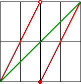

| Recall the fixed points of a function occur at the intersection
of the graph of the function and
the diagonal. |
| Consequently, each funcion fn has n fixed points. For example, |
|
| It is not hard to see that the graph of fnm consists
of line segments having slope nm. Here is a simple, sample calculation, illuminated by this
graph. |
|  |
| f22(x) = f2(f2(x)) = |
| 2⋅f2(x) | for 0 ≤ f2(x) < 1/2 |
| 2⋅f2(x) - 1 | for 1/2 ≤ f2(x) ≤ 1 |
|
= |
| 2⋅f2(x) | for 0 ≤ x < 1/4 and 1/2 ≤ x < 3/4 |
| 2⋅f2(x) - 1 | for 1/4 ≤ x < 1/2 and 3/4 ≤ x ≤ 1 |
|
| | = |
| 2⋅2x = 4x | for 0 ≤ x < 1/4 |
| 2⋅2x - 1 = 4x - 1 | for 1/4 ≤ x < 1/2 |
| 2⋅(2x - 1) 4x - 2 | for 1/2 ≤ x < 3/4 |
| 2⋅(2x - 1)f - 1 = 4x - 3 | for 3/4 ≤ x ≤ 1 |
|
|
| Because the segments of the graph of fnm consists of
segments of slope nm, and the left-most starts at (0, 0), the graph of
fnm consists of nm straight line segments, each going
from x = 0 to x = 1. |
| Consequently, fnm has nm fixed points. |